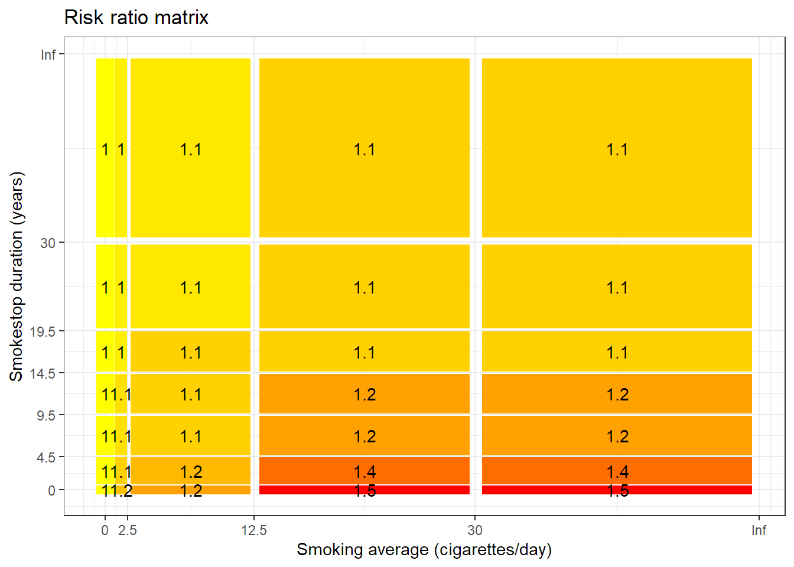

[auto-generated file]
Coronary heart disease is a death cause. It means that there is a certain probability that one dies from this.
In the model Coronary heart disease has the following risk factors
In 2014 Coronary heart disease was responsible for 13.9% of the deaths in the US. Below is a plot of how prevalent the death was for different ages (Xu et al. 2016)
The definition of dying from Coronary heart disease is to get any of the following ICD codes as the main cause of death on one’s death certificate. The percentage is the proportion of the deaths from Coronary heart disease who falls under the ICD code
The combined risk ratio of all risk factors is computed using the formula
\[ RR=RR_{\text{Coffee}} \cdot RR_{\text{Alcohol}} \cdot RR_{\text{Peak alcohol}} \cdot RR_{\text{Phys. total,Phys. Hard}} \cdot RR_{\text{Smoke avg.,Age}} \cdot RR_{\text{Smoke avg.,Smoke end a.}} \cdot RR_{\text{Greens}} \]
The normalization factor is based on the joint distribution of all the risk factors and is computed using the formula
\[ P=P_{\text{Coffee}} \cdot P_{\text{Peak alcohol,Alcohol}} \cdot P_{\text{Phys. total,Phys. Hard}} \cdot P_{\text{Smoke end a.,Age,Smoke avg.}} \cdot P_{\text{Greens}} \]
Coffee consumption is a risk factor for Coronary heart disease.
Below is a plot of the risk ratios we have taken from the literature alterated to fit our model
Because the variable Coffee consumption is numeric, we have computed a smoothed approximation.
If you drink a moderate amount of alcohol, you decrease the risk of dying from coronary heart disease, but this benefit can be erased from binge drinking (which we call Peak alcohol consumption). Roerecke and Rehm (2014) have made a meta-analysis dose-response curve for alcohol consumption and ischemic heart disease mortalitiy, which we will use. They also show that heavy binge drinking can eliminate the benefit for people with an average alcohol consumption of 1 unit per day. To quantify the binge drinking we use the numbers from Malyutina et al. (2002), which is one of the studies included in the meta analysis of Roerecke and Rehm (2014). Because the study from Malyutina et al. (2002) is not a meta-analysis, it has a higher variance and therefore we can therefore presume that it is reason why the data has a maximum between 5.7 to 8.6 drinks is an artifact. This artifact is smoothed out by our interpolation method.
Because the variable Alcohol consumption is numeric, we have computed a smoothed approximation.
See Peak alcohol
Because the variable Peak Alcohol consumption is numeric, we have computed a smoothed approximation.
Hard physical activity time and Total physical activity time are a group of risk factors for Coronary heart disease.
Below is a plot of the risk ratios we have taken from the literature alterated to fit our model
Because the variables Total physical activity time and Hard physical activity time are numeric, we have computed a smoothed approximation.
See Smoking average, Time since smoking per year
Because the variables Smoking average and Age are numeric, we have computed a smoothed approximation.
We use the meta analysis of cohort studies by Hackshaw et al. (2018) to get age-specific risk ratios for different amounts of smoking. They computed a joint risk ratio using estimates that were adjusted for different other risk factors. Only age was a common adjusting risk factor in all the studies. The meta analysis focused on low-intensity smokers which means that they estimated the risk ratio when smoking just one cigarette per day and this is great because it seems that even a little smoking is harmful to the heart. To take into account smoking cessation we multiplied the numbers from Hackshaw et al. (2018) with the smoking cessation estimates from Shields and Wilkins (2013). Shields and Wilkins (2013) perfectly quantifies the drop in risk ratio of dying from coronary heart disease as more times passes since one stopped smoking, but unfortunately, they have not stratified on amount smoked, but instead put all former smokers in the same category. For us to obtain pseudo-stratified data we do the following. Let
\[ RR_{s,a,t}=RR(\text{smoke amount=s, age=a, time since smoking=t})\\ RR_{s,a,\bullet}=RR(\text{smoke amount=s, age=a})\\ RR^*=RR(\text{smoke amount=0, age=a})=1\\ RR_{\bullet,\bullet,t}=RR(\text{time since smoking=t})\\ \widetilde{RR}_t=RR_{\bullet,\bullet,t}/RR_{\bullet, \bullet,0}\\ \widetilde{RR}_{\infty}=RR(\text{never smoked}) \] where all RR-risk ratios are with respect to never-smokers and the \(\widetilde{RR}\)-risk ratios are with respect to current smokers. The study by (???) contains the values \(RR_{s,a,\bullet}\) and the study by Shields and Wilkins (2013) provides \(\widetilde{RR}_t\) and \(\widetilde{RR}_{\infty}\). Ideally we would We estimate \(RR_{s,a,t}\) by
\[ RR_{s,a,t}=RR^*+(RR_{s,a, \bullet}-RR^*)\cdot \frac{\widetilde{RR}_t-\widetilde{RR}_{\infty}}{\widetilde{RR}_0-\widetilde{RR}_{\infty}} \]
The idea is as follows; as you stop smoking you slowly move from the risk ratio you would have if you still smoked (\(RR_{s,a,\bullet}\)) and towards the risk ratio applicable if you never smoked (\(RR^*\)). However, because the deathcauses framework works best if there are not 3-dimensional tables, we do not combine this to make an actual 3-dimensional table. Instead we keep two tables make the computation
\[ RR_{s,a,t}=\Bigl\{\frac{RR_{s,a, \bullet}}{RR_{s,65,\bullet}}\Bigr\}\cdot \Bigl\{RR^*+(RR_{s,65,\bullet}-RR^*)\cdot \frac{\widetilde{RR}_t-\widetilde{RR}_{\infty}}{\widetilde{RR}_0-\widetilde{RR}_{\infty}}\Bigr\} \] where the first product term is saved in one table and the second product term is saved in another.The price for making this trick was to introduce an artificial standard age - here 65. In practice this means that young former smokers will still receive the age penalty \(\frac{RR_{s,a, \bullet}}{RR_{s,65,\bullet}}\) even though they haven’t smoked in a while.
The raw age penalties (\(\frac{RR_{s,a, \bullet}}{RR_{s,65,\bullet}}\)) are shown below. Be aware that this table only says how much more dangerous it is to smoke when you are young and not how dangerous it is to smoke when you are old.

Because the variables Smoking average and Time since smoking per year are numeric, we have computed a smoothed approximation.
Hackshaw, Allan, Joan K Morris, Sadie Boniface, Jin-Ling Tang, and Dušan Milenković. 2018. “Low Cigarette Consumption and Risk of Coronary Heart Disease and Stroke: Meta-Analysis of 141 Cohort Studies in 55 Study Reports.” Bmj 360.
“ICD Order Files 2014.” n.d. https://www.cdc.gov/nchs/icd/icd10cm.htm.
Malyutina, Sofia, Martin Bobak, Svetlana Kurilovitch, Valery Gafarov, Galina Simonova, Yuri Nikitin, and Michael Marmot. 2002. “Relation Between Heavy and Binge Drinking and All-Cause and Cardiovascular Mortality in Novosibirsk, Russia: A Prospective Cohort Study.” The Lancet 360 (9344): 1448–54.
Roerecke, Michael, and Jürgen Rehm. 2014. “Alcohol Consumption, Drinking Patterns, and Ischemic Heart Disease: A Narrative Review of Meta-Analyses and a Systematic Review and Meta-Analysis of the Impact of Heavy Drinking Occasions on Risk for Moderate Drinkers.” BMC Medicine 12 (1): 1–11.
Shields, Margot, and Kathryn Wilkins. 2013. Smoking, Smoking Cessation and Heart Disease Risk: A 16-Year Follow-up Study. Statistics Canada.
Xu, Jiaquan, Kenneth D Kochanek, Sherry L Murphy, and Betzaida Tejada-Vera. 2016. “Deaths: Final Data for 2014.” National Vital Statistics Reports 65 (4).